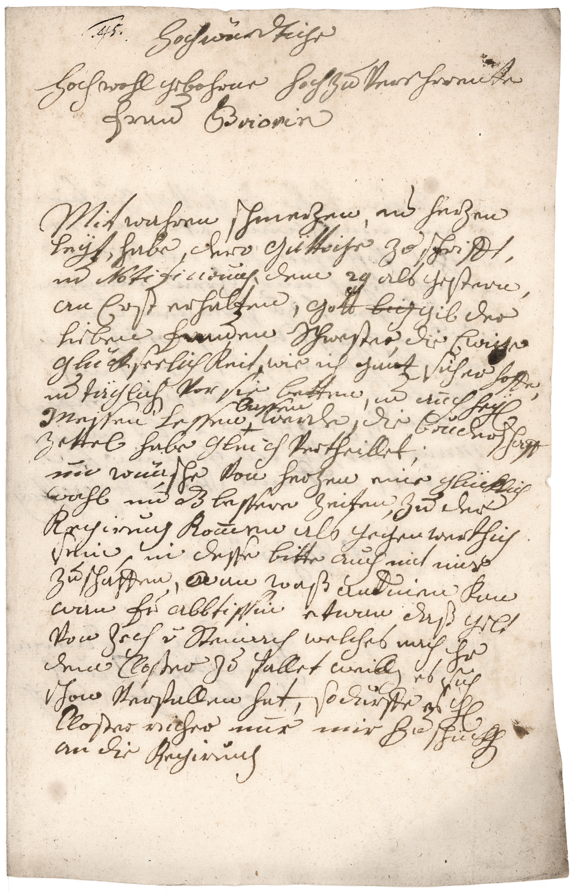

BayHStA, Frauenchiemsee KL, 87



Kommentar
Editor: magdalena.weileder@textgrid.de
Archiv: BayHStA
Bestand: Frauenchiemsee KL
Signatur: 87
Ort: Straubing
Datum: 1799 Oktober 1
Schlagwort: Brief
Schwierigkeitsgrad: schwer
Kurzbetreff:
Kondolenzschreiben
Kondolenzschreiben
Schreiberhände:
- (S1)
Kommentar:
Im Akt mit der Aufschrift: „Briefe an den Convent, an die Abtissin oder Priorin adressirt“ ist auch dieses Kondolenzschreiben der Johanna Nepomucena von Feury erhalten, das sie an die Priorin von Frauenchiemsee anlässlich des Todes ihrer Vorgängerin richtete.
Der Brief ist von sehr ungeübter Hand in Kurrent geschrieben und enthält viele Schreibfehler, insbesondere fehlende oder überzählige Schäfte im Mittelband, und Besserungen, der Tintenauftrag ist unregelmäßig. Zusätzlich wird die Lesbarkeit durch einen teilweise unklaren Satzbau beeinträchtigt. Anstelle von „und“ setzt die Schreiberin un, was jedoch nur in Z. 13 deutlich zu erkennen ist, da sie hier einen waagrechten Strich als diakritisches Zeichen über u verwendet. In der darauffolgenden Zeile ist das diakritische Zeichen bei un eher als diagonales Strichlein ausgeführt und über das n versetzt, der Buchstabenbestand aber gut zu erkennen. Meist fehlt jedoch ein Schaft von un und das diakritische Zeichen ist als Bogen ausgeführt, der ohne Absetzen der Feder in die Oberlänge gezogen wird, sodass es nicht über dem ersten Buchstaben steht und einem d ähneln kann (z.B. Z. 4, 6, 10). Nur in Z. 34 schreibt sie und mit d, und nur, weil sie es hier aus mit bessern musste. Auch bei –ung am Wortende fehlt regelmäßig ein Schaft (z.B. Z. 6: Notificirung, Z. 15: Regirung), unterschiedliche Ausprägungen des diakritischen Zeichens über u sind z.B. auch in Z. 2 (Zu) oder Z. 8 (Frauen) im Gegensatz zu Z. 23 (nur) und Z. 16 (auch) zu sehen.
An einzelnen Majuskeln bringt die Schreiberin recht unbeholfene Zierelemente an (Z. 11: Messen und auf der Rückseite in Z. 3: Rothel und Z. 13: Hochwürden), eine eindeutige Unterscheidung von Groß- und Kleinbuchstaben ist dagegen bei a, g, v und z nicht immer möglich, letzteres kommt am Wortende auch in einer der humanistischen Kursive entlehnten Form vor (Z. 9: ganz, Rückseite Z. 8: Allerseiz). Die Ligaturen von ff und ft sind sehr ähnlich gestaltet (vgl. Z. 9: hoffe, Z. 21: dürfte, in Z. 11: bruderschaft ist der zweite Schaft der Ligatur zu weit in die Unterlänge gezogen), das c im sch verschliffen, n oder en am Wortende wird gelegentlich gekürzt.
Lateinische Begriffe und Teile des Namens werden in humanistischer Kursive geschrieben, teilweise mit Endungen in Kurrent (Z. 6: Notificirung). In der Unterschrift auf der Rückseite verwendet die Schreiberin eine ungewöhnliche F-Form, die wie ein D aussieht (Rückseite Z. 15: Feurÿ, vgl. deutlicher ausgeführtes F auf der ersten Seite in Z. 18: Fr(au)).
Im Akt mit der Aufschrift: „Briefe an den Convent, an die Abtissin oder Priorin adressirt“ ist auch dieses Kondolenzschreiben der Johanna Nepomucena von Feury erhalten, das sie an die Priorin von Frauenchiemsee anlässlich des Todes ihrer Vorgängerin richtete.
Der Brief ist von sehr ungeübter Hand in Kurrent geschrieben und enthält viele Schreibfehler, insbesondere fehlende oder überzählige Schäfte im Mittelband, und Besserungen, der Tintenauftrag ist unregelmäßig. Zusätzlich wird die Lesbarkeit durch einen teilweise unklaren Satzbau beeinträchtigt. Anstelle von „und“ setzt die Schreiberin un, was jedoch nur in Z. 13 deutlich zu erkennen ist, da sie hier einen waagrechten Strich als diakritisches Zeichen über u verwendet. In der darauffolgenden Zeile ist das diakritische Zeichen bei un eher als diagonales Strichlein ausgeführt und über das n versetzt, der Buchstabenbestand aber gut zu erkennen. Meist fehlt jedoch ein Schaft von un und das diakritische Zeichen ist als Bogen ausgeführt, der ohne Absetzen der Feder in die Oberlänge gezogen wird, sodass es nicht über dem ersten Buchstaben steht und einem d ähneln kann (z.B. Z. 4, 6, 10). Nur in Z. 34 schreibt sie und mit d, und nur, weil sie es hier aus mit bessern musste. Auch bei –ung am Wortende fehlt regelmäßig ein Schaft (z.B. Z. 6: Notificirung, Z. 15: Regirung), unterschiedliche Ausprägungen des diakritischen Zeichens über u sind z.B. auch in Z. 2 (Zu) oder Z. 8 (Frauen) im Gegensatz zu Z. 23 (nur) und Z. 16 (auch) zu sehen.
An einzelnen Majuskeln bringt die Schreiberin recht unbeholfene Zierelemente an (Z. 11: Messen und auf der Rückseite in Z. 3: Rothel und Z. 13: Hochwürden), eine eindeutige Unterscheidung von Groß- und Kleinbuchstaben ist dagegen bei a, g, v und z nicht immer möglich, letzteres kommt am Wortende auch in einer der humanistischen Kursive entlehnten Form vor (Z. 9: ganz, Rückseite Z. 8: Allerseiz). Die Ligaturen von ff und ft sind sehr ähnlich gestaltet (vgl. Z. 9: hoffe, Z. 21: dürfte, in Z. 11: bruderschaft ist der zweite Schaft der Ligatur zu weit in die Unterlänge gezogen), das c im sch verschliffen, n oder en am Wortende wird gelegentlich gekürzt.
Lateinische Begriffe und Teile des Namens werden in humanistischer Kursive geschrieben, teilweise mit Endungen in Kurrent (Z. 6: Notificirung). In der Unterschrift auf der Rückseite verwendet die Schreiberin eine ungewöhnliche F-Form, die wie ein D aussieht (Rückseite Z. 15: Feurÿ, vgl. deutlicher ausgeführtes F auf der ersten Seite in Z. 18: Fr(au)).
Entzifferung
(Absatz Beginn)
1 .45.Hochwürdtige
2 Hochwohl gebohrne hochzuVerehrrente
3 Frau Briorin(Wechsel des Schriftsystems)
4 Mit wahren schmerzen, un herzen
5 Leÿt, habe, dero Güttige Zuschrifft,
6 un Notificir(Wechsel des Schriftsystems)ung, dem 29 als gestern,
7 an Erst erhalten, Gott big(getilgt) gib der
8 Lieben Frauen Schwester, die Ewige
9 glückseelichkeit,wie ich ganzsicher hoffe,
10 un täglich Vor sie betten,unauch heÿ(lige)
11 Messen Lessen +a)lassen(Über der Zeile nachgetragener Text) werde, diebruderschaft
12 Zettel habe gleich Vertheillet;
13 un wünsche Von herzeneine glücklich
14 wahl un d(a)z bessereZeiten, Zu der
15 Regirung kom(m)en als gegenwerthig
16 sein, in desse bitteauch mit mir
17 Zuschaffen,wanb)waß andinenc) kan
18 wan Fr(au) abbtissinetwan daß gelt
19 Von Zech v(on) Steinachwelchesnach ihr
20 dem Closter zu falletweill(en)es sich
21 schon Verfallen hat,so dürfteesh(err)
22 Closter richernur mirZud) schückh(en)
23 an die Regirung
(Absatz Ende)
a) Einfügungszeichen
b) Lesung des Wortes "wan"(Textzitat) unsicher, der erste Buchstabe ist gebessert, vermutlich aus "o"(Textzitat) oder "a"(Textzitat)
c) "d"(Textzitat) in "andinen"(Textzitat) vermutlich gebessert aus "t"(Textzitat)
d) angesetzt zu einem langen "s"(Textzitat), gebessert zu "Zu"(Textzitat)
Transkription
(Absatz Beginn)
1 45 Hochwürdtige,
2 hochwohlgebohrne, hochzuverehrrente
3 frau briorin(Wechsel des Schriftsystems),
4 mit wahren schmerzen un herzen-
5 leÿt habe dero güttige zuschrifft
6 un notificir(Wechsel des Schriftsystems)ung, dem 29 als gestern,
7 anerst erhalten. Gott, a) gib der
8 lieben frauen schwester die ewige
9 glückseelichkeit, wie ich ganz sicher hoffe,
10 un täglich vor sie betten un auch heÿlige
11 messen lessen lassenb) werde. Die bruderschaft-
12 zettel habe gleich vertheillet
13 un wünsche von herzen eine glücklich
14 wahl, un daz bessere zeiten zu der
15 regirung kommen, als gegenwerthig
16 sein. Indesse bitte auch mit mir
17 zu schaffen, wanc) waß andinend) kan,
18 wan frau abbtissin etwan daß gelt
19 von Zech von Steinach, welches nach ihr
20 dem closter zufallet, weillen es sich
21 schon verfallen hat, so dürfte es herr
22 closterricher nur mir zue) schückhen
23 an die regirung.
(Absatz Ende)
a) durch Durchstreichen getilgt: "big"(Textzitat)
b) "lassen"(Textzitat) über der Zeile eingefügt, auf der Zeile ein kreuzförmiges Einfügungszeichen
c) Lesung des Wortes "wan"(Textzitat) unsicher, der erste Buchstabe ist gebessert, vermutlich aus "o"(Textzitat) oder "a"(Textzitat)
d) "d"(Textzitat) in "andinen"(Textzitat) vermutlich gebessert aus "t"(Textzitat)
e) angesetzt zu einem langen "s"(Textzitat), gebessert zu "zu"(Textzitat)